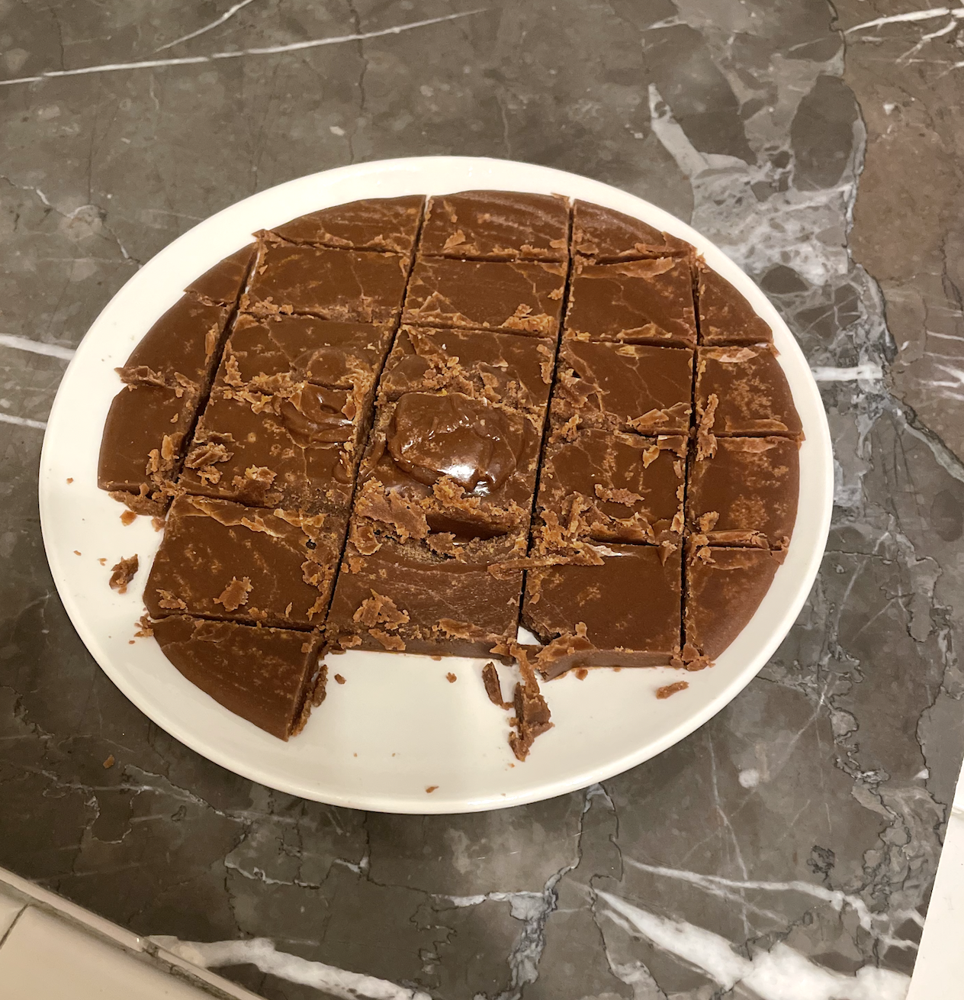

Classic Fudge

Description
One of my favorite confections is fudge. Not the soft and gooey marshmallow fudge many people like these days, but a more rustic, firm fudge.
Tools You'll Need
- 2-quart saucepan
- measuring cups and spoons and/or a kitchen scale
- whisk
- candy thermometer (alright you don't actually need this, but you might want it)
Ingredients
- 2 cups (400g) granulated sugar
- 1 cup (240ml) whole milk
- 2 tbsp (15g) cocoa powder
- 4 tbsp (56g) butter
Process
- Whisk the sugar and cocoa powder together in your saucepan. Add the milk and put the pan over medium-high heat, stirring constantly until the dry ingredients have dissolved.
- Continue stirring gently until the mixture comes to a boil.
- Allow the mixture to boil for about 10 minutes, until either:
- if you're using a candy thermometer: it reaches 240° F (116° C); or
- if you're not using a candy thermometer: it reaches "soft ball" stage.1
- Remove from heat and whisk in the butter until it's completely melted/incorporated.
- Pour the mixture into a greased dinner plate and allow it to set (~10 to 15 minutes).
- Cut and enjoy.
Notes
- "Soft ball" stage means that when you allow a drop of the fudge to fall into a small cup of water, it congeals into a soft ball that you can knead between your fingers. If your fudge isn't done yet, the drop will dissolve/crumble apart (depending on how far from done it is). If your fudge is overdone, the drop will harden and sink like a pebble. If this sounds tricky to you, that's because it is. A candy thermometer is much simpler. Stick that dude in the mixture when you start, and take the mixture off the heat when you hit the right temperature.
- Low-fat and lactose-free milk options work fine for this recipe, but dairy-free options have never worked for me.
Home